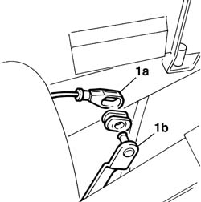
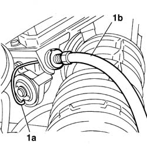
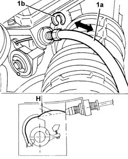

1068A30 accelerator control cable - r + r
- Path
- Procedures > 10 ENGINE > 1068 ACCELERATOR CONTROLS > 1068A accelerator pedal control > 1068A30 accelerator control cable - r + r
- Kind
- repair procedure (removal / refitting; the operation number is the code)
- Applies to
- engines: 1.6 TS , 1.8 TS; all production periods
- Interactive page
- https://sloeber94.github.io/elrnDB-a156/en/#/3237692
Applies to: engines: 1.6 TS , 1.8 TS; all production periods
 Removing
Removing
 Refitting
Refitting1. Withdraw the end of the accelerator cable (1a) from pedal lever (1b).

Applies to: engines: 1.6 TS , 1.8 TS; all production periods
1. Disconnect cable end (1a) from the throttle valve and disconnect the cable assembly. Withdraw from the bulkhead separating engine bay/passenger compartment.

Applies to: engines: 1.6 TS , 1.8 TS; all production periods
Refitting
RemovingConnect the cable ending to the throttle control and connect the fairlead in the special opening in the bulkhead separating engine bay and passenger compartment.
Connect the cable ending to the accelerator pedal lever.
1. Adjust the accelerator cable (1a) using the clip (1b) so that with the pedal released the throttle is completely closed and the cable clearance "H" is 5mm.

Applies to: engines: 1.6 TS , 1.8 TS; all production periods
Check that the end travel stop on the throttle body is in contact when the pedal is fully depressed (throttle open).
If not, adjust the accelerator pedal travel stop.
Topics that link to this page (7)
- D03 ENGINE NOT RUNNING SMOOTHLY / (IRREGULAR OPERATION)
- D05 ENGINE DOES NOT PRODUCE BEST PERFORMANCE
- 1004B12 power unit with manual gearbox - r+r for versions with a/c
- 1056B15 throttle body intergral with mds - r r
- 1056B81 run electronic ignition/injection control unit (single) self-learning procedure
- 1068A14 accelerator pedal - r + r
- 1072D10 modular inlet manifold - r+r